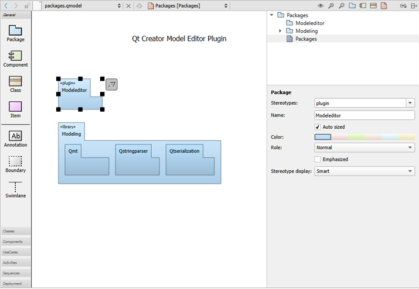

Create package diagrams
You can create UML-style models that contain package diagrams. They show packages and their relationships to visualize how the system is packaged.
You can add nested package elements to a package diagram. The depth of the elements in the diagram corresponds to the depth of the structured model. Elements stacked on other elements of the same type are automatically drawn in a darker shade of the selected color.

A package diagram in the model editor.
Right-click a package to open a context menu, where you can select Create Diagram to create a new package diagram within the model. You can drag items from the element tree to the diagram.
To update the include dependencies of the package, select Update Include Dependencies.
See also Create class diagrams, Create component diagrams, Create UML-style models, and Model Editor.